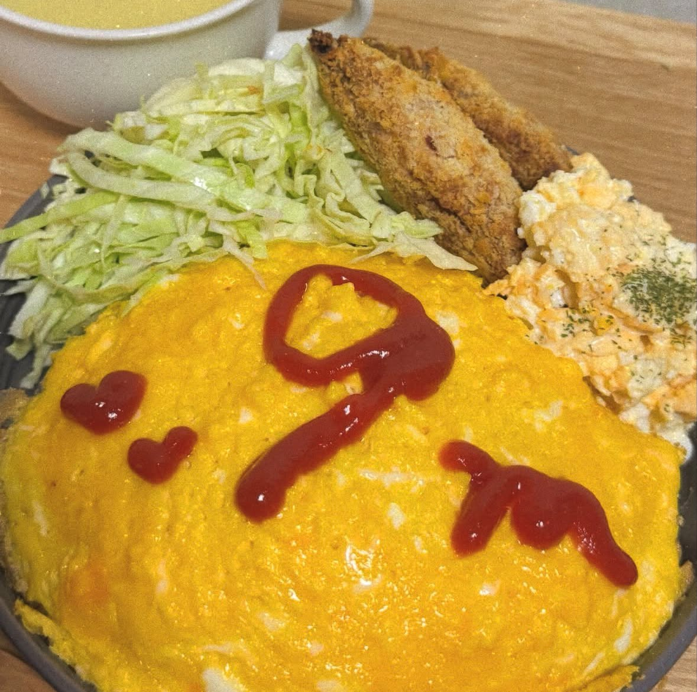
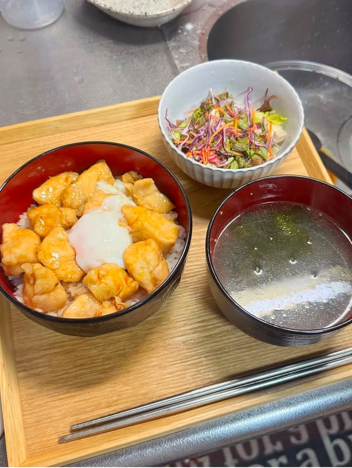
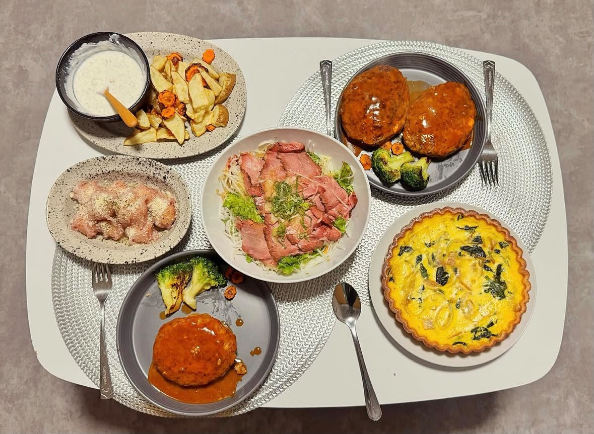

- トップ >
- シチュエーション別ご飯
シチュエーション別ご飯
記念日や疲れているときなどのシチュエーションに合わせた手料理をご紹介。
記念日ディナー

記念日ごはんを作るときのポイントは、特別感・見た目・準備を意識することです。 ★相手の好みに合わせる：好きな料理や苦手な食材を取り入れる。 ★見た目を華やかにする：彩りや盛り付けを工夫して特別感を演出する。 ★事前に準備する：作る手順を確認し、時間に余裕を持って調理する。 ★無理のないメニューを選ぶ：作り慣れた料理を中心にして失敗を防ぐ。 ★食卓も演出する：おしゃれな食器やキャンドル、花などで雰囲気を高める。
疲れた日のスタミナごはん

たんぱく質やビタミン、炭水化物をバランスよく取り入れ、消化しやすく体を温める料理にすると、疲れた体の回復をサポートできます。
誕生日メニュー

誕生日ご飯を作る時のポイントを簡潔にまとめるとこんな感じ！ ★主役の好きな料理を取り入れる ★彩りを意識して華やかに盛り付ける ★前菜・メイン・デザートで特別感を出す ★無理のないメニューで温かい料理は温かいうちに提供する ★飾り付けやメッセージでお祝いの雰囲気を演出する